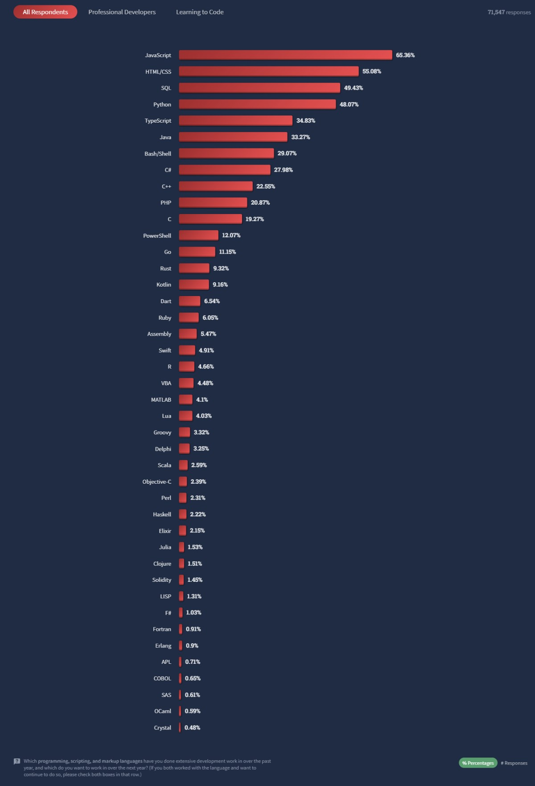
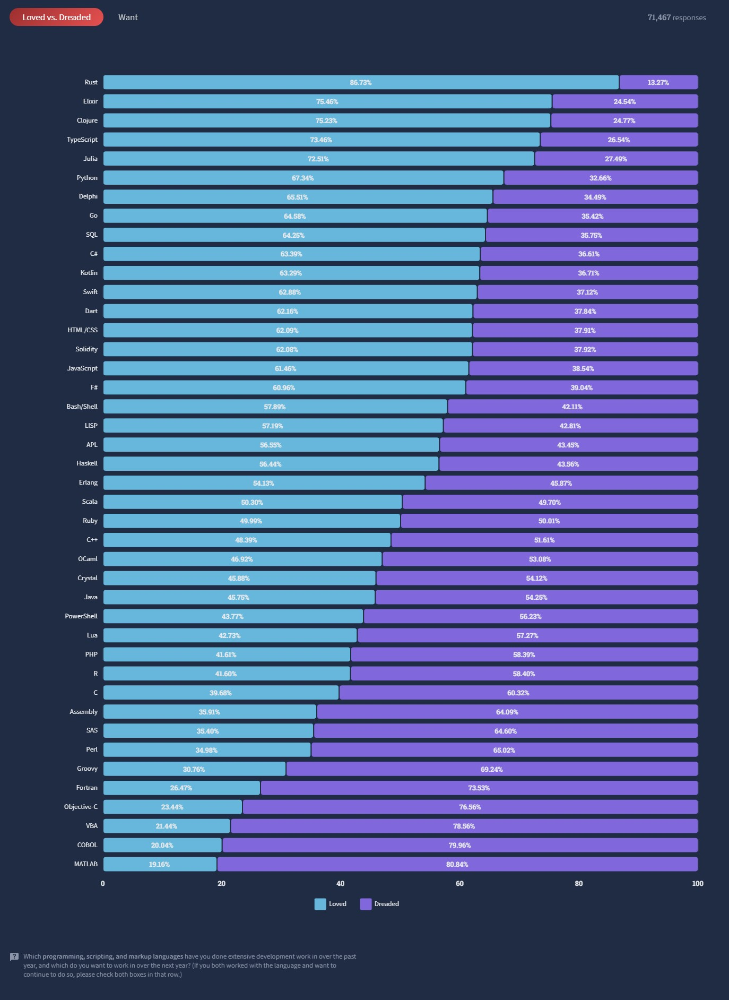
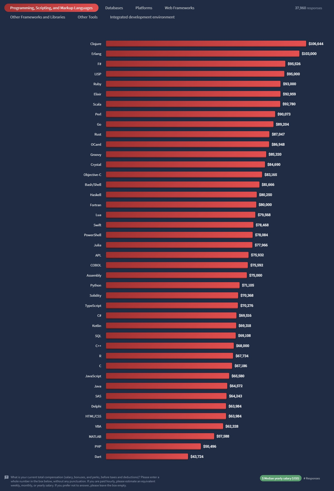
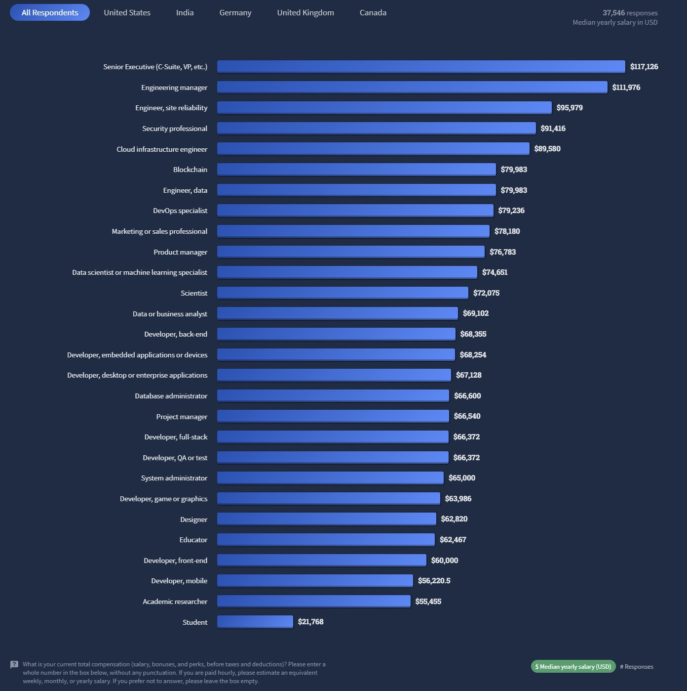

Comme chaque année, Stack Overflow* dévoile sa vaste enquête qui dresse un état des lieux des technologies les plus populaires, des préférences des développeurs, mais aussi de leurs conditions de travail. L’édition 2022 s’appuie sur les témoignages de plus de 73 000 développeurs, de tous niveaux, dans 180 pays, les États-Unis, l’Inde, l’Allemagne, le Royaume-Uni et le Canada étant les plus représentés.
Pour la 10e année consécutive, JavaScript est le langage de programmation le plus couramment utilisé par les développeurs (voir image de une). Il arrive à la 1ère place du classement, cité par plus de 65 % des répondants. Il est suivi par les langages HTML/CSS (55 %), SQL (49 %) et Python (48 %) . Cependant, du côté des développeurs qui apprennent encore à coder, HTML/CSS arrive 1er (63 %), suivi de JavaScript (60 %) et Python (58 %). Stack Overflow note ainsi que les personnes qui apprennent à coder sont plus susceptibles que les développeurs professionnels de déclarer utiliser Python (58 % contre 44 %), C++ (35 % contre 20 %) et C (32 % contre 17 %).
L’étude menée par Stack Overflow fait également état des technologies les plus aimées, redoutées et demandées par les développeurs, à commencer par les langages de programmation. Pour la 7e année consécutive, Rust est le langage le plus apprécié, avec près de 87 % des développeurs qui affirment vouloir continuer à l’utiliser. En fin de classement, MATLAB apparaît comme le langage le moins populaire, perdant 2 places par rapport à l’an dernier. Rust est également le langage le plus recherché, au coude-à-coude avec Python
 Comme l’année dernière, ce sont les développeurs maîtrisant le langage Clojure qui seraient le mieux rémunérés avec un salaire annuel médian estimé à 106 644 $. En termes de big data et de data streaming, les compétences en Apache Spark (salaire annuel médian estimé à 87 948 $), Apache Kafka (83 182 $) et Hadoop (76 000 $) sont particulièrement rémunératrices.
Du côté des plateformes, les développeurs qui gèrent les serveurs dans des data center partagés (colocation) sont mieux payés que leurs homologues qui utilisent des services 100 % cloud. Le salaire annuel médian pour les premiers est de 111 196 $ contre 81 387 $ pour ceux spécialisés dans l’utilisation de la plateforme de cloud computing

De manière globale, les postes de direction tels que les cadres et les responsables de l’ingénierie ont tendance à présenter les salaires les plus élevés. Mais aux États-Unis, en Allemagne, au Royaume-Uni et au Canada, les développeurs blockchain se situent assez haut dans le classement des rémunérations, même s’ils disposent de beaucoup moins d’années d’expérience.
Stack Overflow est un site web proposant des questions et réponses sur un large choix de thèmes concernant la programmation informatique. Il fait partie du réseau de sites Stack Exchange. Chaque membre peut voter pour les questions et réponses postées, faisant gagner des points, appelés réputation, à leurs auteurs. Il est également possible de voter contre (downvote) pour pénaliser l'auteur de la réponse et indiquer aux futurs lecteurs que cette réponse n'est pas pertinente11. Le but de ces votes est de mettre en avant les réponses de qualité, tout en récompensant leurs auteurs12, leur donnant accès à des privilèges quand certains seuils de réputation sont atteints (par exemple : pouvoir voter, voir moins de publicités, pouvoir fermer les questions). Pour en savoir plus ici